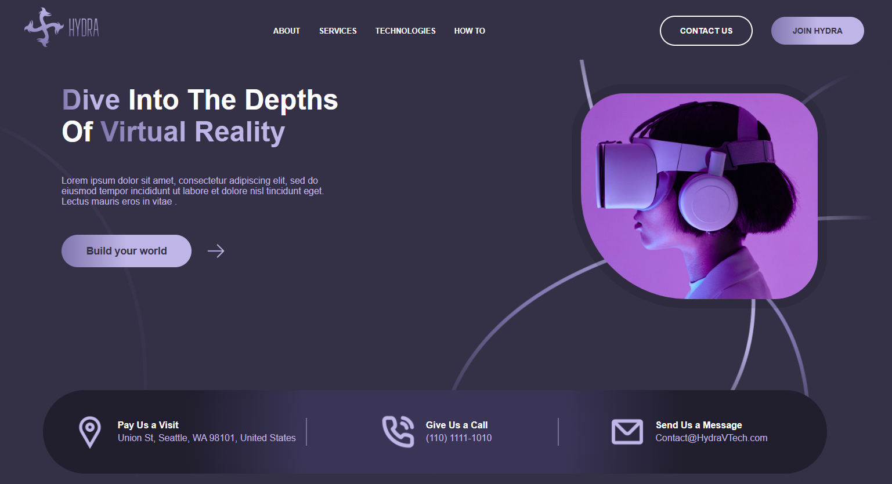

Hydra Landing Page
Esta página contém o estudo de caso do Projeto de Código Aberto Hydra Landing Page, que inclui a Visão Geral do Projeto, as Ferramentas Utilizadas e os Links Ativos para o produto oficial.
Link Projeto
Visão Geral do Projeto
Este projeto é uma landing page desenvolvida a partir de um design encontrado no Figma, implementada com React e Vite. O objetivo principal foi transformar o layout estático em uma interface totalmente funcional e responsiva, explorando boas práticas de desenvolvimento e organização de código. Durante o processo, busquei reproduzir fielmente o design original, adicionando interatividade e garantindo uma experiência agradável em diferentes dispositivos.
Principais funcionalidades implementadas
- Estrutura do projeto construída em React com Vite para carregamento rápido e otimização;
- Layout 100% responsivo, adaptando-se a celulares, tablets e desktops;
- Três tipos de slides interativos, com botões de avanço e retorno;
- Navegação fluida e transições suaves entre os conteúdos;
- Código organizado e escalável, facilitando futuras manutenções ou expansões do projeto.
Ferramentas Utilizadas
- HTML
- CSS
- React
- GIT
- Github